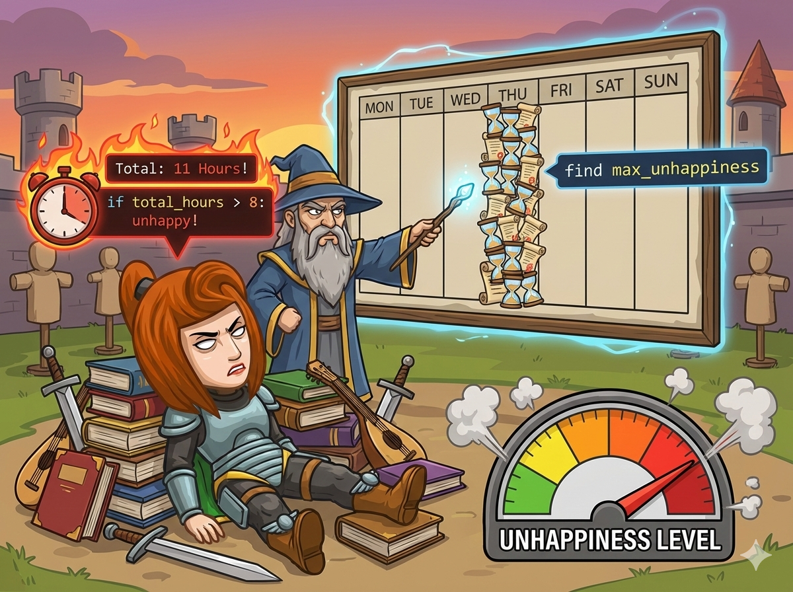

英雄进入了冒险学院，导师安排了地狱般的训练计划 ⚔️。 每天有两项任务：学院训练 (a) 和 额外修炼 (b)。
英雄的忍耐是有限的：
😤 如果一天总时间 > 8小时，他就会不高兴。
🔥 时间越长越生气！
👉 任务： 检查这 7 天，英雄会不会不高兴？ 如果会，找出他 最生气 的那一天（如果有多天一样生气，输出最早的那天）。如果一周都很开心，输出 0。
这道题的核心是 “找最大值”。我们需要遍历 7 天，找出总时间最大且超过 8 的那一天。
我们设两个变量来记录“目前的冠军”：
每天算出总时间 s = a + b。
如果 s > 8 并且 s > m，说明今天比之前任何一天都惨，更新记录！
英雄的耐力有限，快写代码帮他监测心情值！
#include <iostream> using namespace std; int main() { int a, b; // a:学校时间, b:额外时间 int s; // s:总时间 sum int m = 0; // m:最大不高兴程度 (max), 初始为0 int d = 0; // d:最不高兴的一天 (day), 初始为0 // 循环 7 次，代表周一到周日 for (int i = 1; i <= 7; i++) { cin >> a >> b; // 读入今天的安排 s = a + b; // 计算总时间 // 如果今天超时(>8) 并且 比之前的最大值还大 if (s > 8 && s > m) { m = s; // 更新最大值 d = i; // 更新天数 } } cout << d << endl; // 输出结果 return 0; }
m = 0 # m: 最大不高兴程度 (max) d = 0 # d: 最不高兴的一天 (day) # 循环 1 到 7，代表周一到周日 for i in range(1, 8): # 读入一行两个数 a, b = map(int, input().split()) s = a + b # 计算总时间 # 如果超时(>8) 并且 比之前的最大值还大 if s > 8 and s > m: m = s # 更新最大值 d = i # 记录是周几 print(d)
⭐ 为什么是 s > m 而不是 s >= m？ 题目要求如果有多天一样不高兴，输出 最早 的一天。 用 > 的话，如果后面遇到一样大的，条件不成立，就不会更新，这样 d 就一直保留着最早的那天啦！